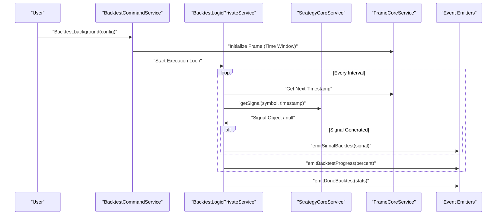

The backtest-kit framework provides a robust engine for historical strategy evaluation. It operates through a two-phase lifecycle: configuration (registering components via add* functions) and execution (running the simulation and analyzing results).
The framework supports two primary execution modes: streaming and event-driven.
Backtest.run()Backtest.run() is an asynchronous generator that yields the current timestamp at every step of the backtest. This is ideal for linear execution where the caller needs to synchronize external logic with the backtest clock.
Backtest.background()Backtest.background() executes the backtest as a background process, emitting events as it progresses. This is the preferred method for complex integrations where multiple listeners respond to signals and state changes.
The following diagram illustrates the internal command flow during a background backtest execution.
Backtest Execution Sequence

To capture data during a background run, the framework provides specific listener functions:
| Function | Purpose | Data Provided |
|---|---|---|
listenSignalBacktest |
Triggered when a strategy generates a new signal. | Signal object |
listenBacktestProgress |
Reports the completion percentage of the current run. | number (0-100) |
listenDoneBacktest |
Triggered upon completion of the frame window. | Final statistics object |
The Backtest singleton provides methods to retrieve performance metrics after or during execution.
Backtest.getData())The getData() method returns a structured object containing the strategy's performance:
Backtest.getReport(): Generates a formatted Markdown report of the backtest results.Backtest.dump(): Persists the entire backtest state, including all signals and metrics, to a JSON file for later analysis.Reporting Component Association

A critical feature of the backtest-kit is the prevention of look-ahead bias. This is achieved through "Context-Aware Data Fetching".
When a strategy calls getCandles() or fetchNews(), the framework automatically detects the execution context (Backtest vs. Live) using internal async hooks:
feb_2026_strategy, news fetching is constrained to a 24-hour window relative to the simulated time, ensuring the LLM cannot "see" future events.